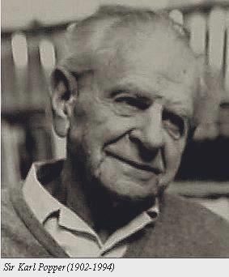

- My name is Michael Teevan.
- Born and raised in Thousand Oaks, CA
- Currently living in Oxnard, CA
Some of my interests include:
- Philosophy
-
Karl Popper is my favorite philosopher and has influenced me the most in my ability to think critically and clearly. Popper is considereed one of the most influential philosophers of science during the 20th century. He introduced the idea of falsification as a necessary condition for a scientific theory.
 - Web Development
-
My friend and LSAT tutor introduced me to web development and Ruby on Rails a couple years ago. While trying to learn Rails by myself I stumbled across DBC, which I am now looking forward to attending in September in San Francisco.
- Clothing and Style
-
Until very recently, I had been living in Minneapolis, MN where I worked full-time at J.Crew at Mall of America in Bloomington, MN. I'm not sure exactly how I began to be so interested in clothing, style and how people dress, but it has become a large part of my identity.
This is my sister and me in an awkward family photo. We're weird.